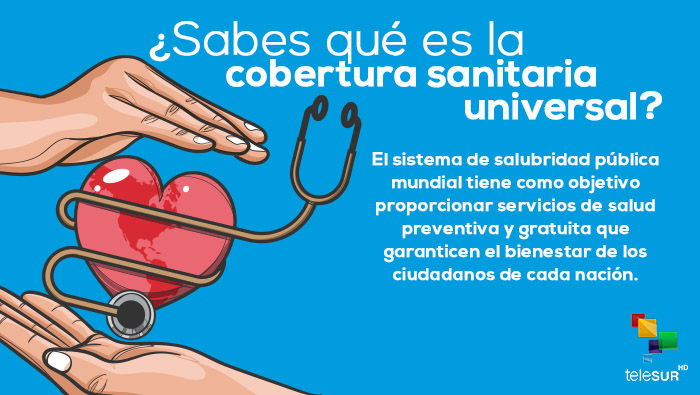

Información sobre el Día Mundial De La Salud
Infografia
Información sobre el Día Mundial De La Salud
Salud universal significa que todas las personas tengan acceso, sin discriminación alguna, a servicios de salud integrales de calidad, cuándo y dónde los necesitan, sin enfrentarlas a dificultades financieras.
- Requiere la definición e implementación de políticas y acciones con un enfoque multisectorial para abordar los determinantes sociales de la salud y fomentar el compromiso de toda la sociedad para promover la salud y bienestar
- El Día Mundial de la Salud (DMS), que se celebra el 7 de abril, este año marca el final de las celebraciones del 70 aniversario de la Organización Mundial de la Salud (OMS).
- En la Región de las Américas, estas celebraciones se han enfocado en torno a la salud universal, bajo el lema “Salud universal: para todos y todas, en todas partes”.
Aplicacion 3 Día Mundial De La Salud
Abigail Martínez Rosas
Cuando se celebra y por que ?
Cada año, el 7 de abril se celebra el Día Mundial de la Salud para conmemorar el aniversario de la fundación de la Organización Mundial de la Salud (OMS) en 1948. Bajo el lema “Pequeñas picaduras, grandes amenazas”, las enfermedades transmitidas por vectores son el tema elegido por la OMS para este día.
El Día de la Cobertura Universal de Salud, que se conmemora cada 12 de diciembre, es el aniversario de la primera resolución unánime de las Naciones Unidas en la que se pide a los países que brinden atención médica asequible y de calidad a todas las personas y en todas partes. La cobertura universal de salud se ha incluido en los nuevos Objetivos de Desarrollo Sostenible adoptados por las Naciones Unidas.
La Salud Universal significa que todas las personas tengan acceso, sin discriminación alguna, a servicios integrales de calidad, cuándo y dónde los necesitan, sin exponerlas a dificultades financieras.
- Inspirar— poniendo de relieve el poder que tienen los responsables de la formulación de políticas para transformar la salud de su nación, caracterizándolo como un desafío estimulante y ambicioso, e invitándoles a formar parte del cambio.
- Motivar — intercambiando ejemplos de cómo los países ya están avanzando hacia la CSU y alentando a otros países a encontrar su propio camino.
- Guiar— proporcionando herramientas para un diálogo estructurado en materia de políticas sobre la manera de promover la CSU en el ámbito nacional o respaldando estos esfuerzos en otros países (por ejemplo, ampliando la cobertura de los servicios, mejorando su calidad y reduciendo los pagos sufragados por los usuarios de su propio bosillo).
Aplicacion 3 Día Mundial De La Salud
Abigail Martínez Rosas
Que se trata de conseguir con la campaña ?
La Organización Mundial de la Salud se fundó sobre la base del principio de que todas las personas deberían poder hacer efectivo su derecho al grado máximo de salud que se pueda lograr.
Por lo tanto, la “Salud para todos” ha sido la visión que nos ha guiado a lo largo de más de siete decenios. También es el motor de la actual iniciativa impulsada a nivel de toda la Organización de ayudar a los países a avanzar hacia la cobertura sanitaria universal (CSU).
La experiencia nos ha demostrado, una y otra vez, que la cobertura sanitaria universal se logra cuando existe una firme determinación política.
Así pues, en este año en que celebra su septuagésimo aniversario, la OMS pide a los líderes mundiales que respeten los compromisos que contrajeron cuando acordaron los Objetivos de Desarrollo Sostenible en 2015, y que se comprometan a adoptar medidas concretas para promover la salud de todas las personas. Ello significa garantizar que todas las personas, en cualquier lugar, puedan tener acceso a servicios de salud esenciales y de calidad sin tener que pasar apuros económicos.
La Organización dedicará una atención de alto nivel a la CSU por medio de una serie de actos organizados a lo largo de 2018, que comenzarán con el Día Mundial de la Salud, el 7 de abril, con conversaciones a nivel mundial y local sobre la manera de alcanzar el objetivo de la salud para todos.
Aplicacion 3 Día Mundial De La Salud
Abigail Martínez Rosas
Que hace la OMS ?
OMS es la sigla de la Organización Mundial de la Salud, una entidad de la Organización de las Naciones Unidas (cuya sigla, por su parte, es ONU). La OMS se encarga de la gestión de políticas sanitarias a escala global. ... Para la OMS, la salud puede definirse como el estado completo de bienestar físico, mental y social.
Aplicacion 3 Día Mundial De La Salud
Abigail Martínez Rosas
Cobertura Sanitaria Universal
El Día de la Cobertura Universal de Salud, que se conmemora cada 12 de diciembre, es el aniversario de la primera resolución unánime de las Naciones Unidas en la que se pide a los países que brinden atención médica asequible y de calidad a todas las personas y en todas partes.
La cobertura universal de salud se ha incluido en los nuevos Objetivos de Desarrollo Sostenible adoptados por las Naciones Unidas. La Salud Universal significa que todas las personas tengan acceso, sin discriminación alguna, a servicios integrales de calidad, cuándo y dónde los necesitan, sin exponerlas a dificultades financieras.

Aplicacion 3 Día Mundial De La Salud
Abigail Martínez Rosas
Que es lo que NO incluye la cobertura sanitaria ?
- La CSU no implica la cobertura gratuita de todas las intervenciones sanitarias posibles, independientemente de su costo, ya que ningún país puede permitirse ofrecer todos los servicios gratuitamente de forma sostenible.
- La CSU no se refiere únicamente a la financiación de la salud: abarca todos los componentes del sistema de salud, a saber, los sistemas de prestación de servicios de salud, el personal sanitario, las instalaciones sanitarias o las redes de comunicación, las tecnologías sanitarias, los sistemas de información, los mecanismos de garantía de la calidad, la gobernanza y la legislación.
- La CSU no solo tiene por finalidad asegurar un conjunto de servicios de salud mínimos, sino también lograr la ampliación progresiva de la cobertura de los servicios de salud y de la protección financiera, conforme se disponga de más recursos.
- La CSU no solo engloba los servicios de tratamiento específicos, sino también incluye los servicios a la población como las campañas de salud pública, la adición de flúor al agua, el control de los lugares de reproducción de los mosquitos, entre otros.
- La CSU comprende mucho más que solo la salud. Adoptar medidas para alcanzar la cobertura sanitaria universal equivale a adoptar medidas para lograr la equidad, las prioridades en materia de desarrollo y la inclusión y cohesión sociales.
Aplicacion 3 Día Mundial De La Salud
Abigail Martínez Rosas


 3
3 4
4 5
5 6
6 7
7 8
8